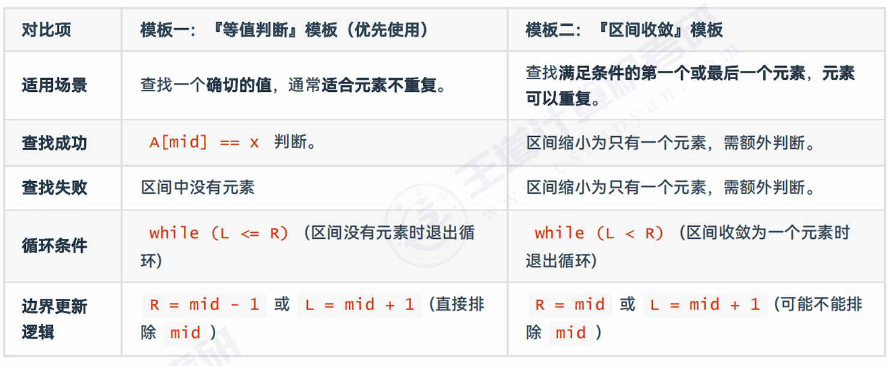
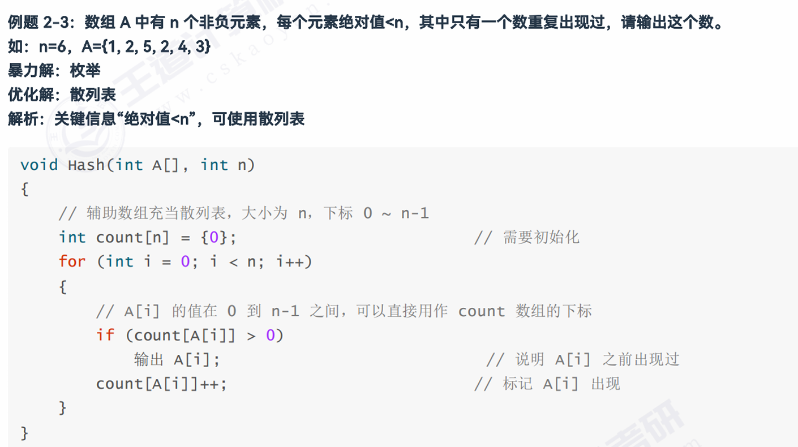
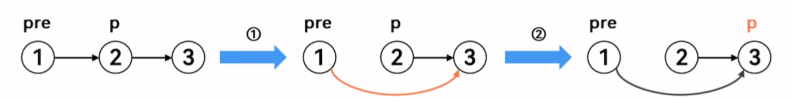
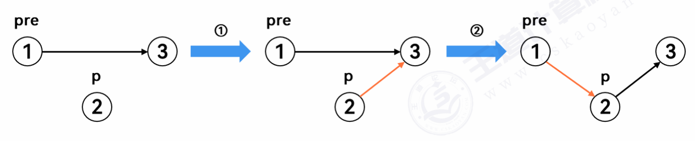
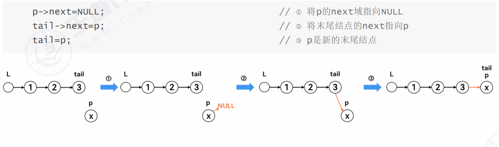
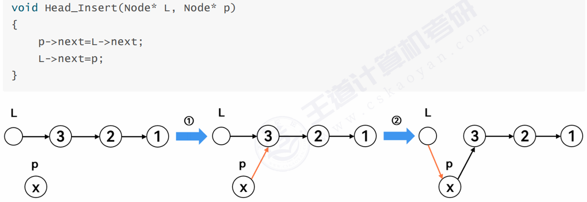

1. 暴力解法
🔍
枚举
遍历所有可能的情况，逐个检查是否满足条件。
⚡
快速排序
将无序数据变为有序，很多问题在有序条件下有更优解。
系统梳理顺序表和链表的常见算法思想。
涵盖暴力枚举、快速排序、折半查找、散列表、预处理、多指针法、逆置等核心方法。
遍历所有可能的情况，逐个检查是否满足条件。
将无序数据变为有序，很多问题在有序条件下有更优解。
void Qsort(int A[], int L, int R){
if (R < L) return; // 区间内元素个数为0或1，直接递归返回即可
int i = L, j = R;
int pivot = A[L];
while (i < j){
while(i < j && A[j] >= pivot) j--;
while(i < j && A[i] <= pivot) i++;
if(i < j) swap(A[i], A[j]);
}
swap(A[L], A[i]);
Qsort(A, L, i-1);
Qsort(A, i+1, R);
}只需反转两处比较方向：
while(i < j && A[j] <= pivot) j--; // 从右往左找比 pivot 大的
while(i < j && A[i] >= pivot) i++; // 从左往右找比 pivot 小的快排不是万能的！以下场景不能使用：
平均 O(n log n) · 最坏 O(n²) · 空间 O(log n) · 不稳定
以下是几种核心的优化思想。
时间 O(log n)
空间 O(1)
适用：有序顺序表
时间 O(n)
空间 O(m)
适用：数据范围有限
预处理 O(n)
查询 O(1)
适用：频繁区间查询
时间视情况
空间 O(1)
适用：有序线性表
核心要素：有序顺序表 | 时间 O(log n) | 空间 O(1)
有两种模板。
经典「缩小区间」模式，判断条件为 while (L <= R)：
int B_Search(int A[], int L, int R, int x){
int mid;
while(L <= R){ // 只要区间不为空就继续
mid = (L + R) / 2;
if(A[mid] == x){
return mid; // 查找成功
}
else if (A[mid] > x){
R = mid - 1;
}
else L = mid + 1;
}
return -1; // 查找失败
}
通过不断收敛区间来锁定一个边界，判断条件为 while (L < R)：
int B_Search(int A[], int L, int R, int x){
int mid;
while(L < R){ // 缩小区间直到只有一个元素
mid = (L + R) / 2;
if (A[mid] >= x) R = mid; // 第一个符合条件的元素的下标在 L~mid
else L = mid + 1; // 第一个符合条件的元素的下标在 mid+1~R
}
return L; // 可能成功也可能失败，需额外判断
}🎯 模板二适用场景
在升序数组中查找第一个等于 x 的元素（数组中可能存在多个 x）。
找到位置 pos 后，需额外判断：return (A[pos] == x) ? pos : -1;

使用条件：数据范围有限 | 时间 O(n) | 空间 O(m)
以空间换时间，创建辅助数组 count[]，count[i] 用于记录数值 i 出现的相关信息（如次数、是否出现等）。
🎯 什么时候用？
题目明示或通过分析确定元素值的范围时——例如元素值为 0 ~ n-1，或元素绝对值 < n ——马上考虑散列表。

使用条件：频繁区间查询 | 预处理 O(n) | 查询 O(1)
多次查询不同区间的和时，用 O(n) 时间预处理出前缀和数组 sum[]，后续每次查询仅需 O(1)。
预处理过程（sum[i] = 前 i 个元素的和，下标范围 0 ~ i-1）
sum[0] = 0
sum[1] = A[0]
sum[2] = A[0] + A[1] = sum[1] + A[1]
sum[3] = A[0] + A[1] + A[2] = sum[2] + A[2]
...📐 关键公式
区间 [L, R] 的所有元素之和 = sum[R + 1] – sum[L]
📌 例（P2-6）：给定含 n 个整数的数组 A，求所有可能的连续子数组的和的最大值。例：n=4, A={1, -2, 3, 5}。
枚举所有子数组：{1}→1, {-2}→-2, {3}→3, {5}→5；{1,-2}→-1, {-2,3}→1, {3,5}→8；{1,-2,3}→2, {-2,3,5}→6；{1,-2,3,5}→7。res 数组为 {5, 8, 6, 7}。
void ans(int A[], int n) {
// 定义结果数组并初始化
int res[n];
for (int i = 0; i < n; i++)
res[i] = INT_MIN;
// 定义前缀和数组
int sum[n + 1] = {0};
for (int i = 1; i <= n; i++)
sum[i] = sum[i-1] + A[i-1];
// 枚举所有区间 [i, j] 并更新
for (int i = 0; i < n; i++)
for (int j = i; j < n; j++) {
int temp = sum[j+1] - sum[i];
if (temp > res[j-i])
res[j-i] = temp;
}
// 输出 res 数组
}频繁查询区间最大/最小值时，提前维护前缀最值数组。
📌 例（P2-7）：给定数组 A，对于每个 j，定义 res[j] = A[0~j] 的最大值 × A[j]。如 A = {3, 1, 2, 7, 6}，则 res = {9, 3, 6, 49, 42}。
B[i] 表示 i 下标及之前元素（A[0 ~ i]，共 i+1 个元素）的最值void ans(int A[], int n) {
int res[n], B[n];
B[0] = INT_MIN;
for (int i = 0; i < n; i++)
B[i] = max(B[i-1], A[i]);
for (int j = 0; j < n; j++)
res[j] = B[j] * A[j];
// 输出 res 数组
}使用条件：线性表（顺序表、链表），主要是有序线性表 | 时间视情况 | 空间 O(1)
核心思想
在一个或多个线性表上设置两个或多个下标变量（指针），按照特定规则移动它们。
⭐ 「特定规则」就是双指针法的灵魂。
| 要点 | 说明 |
|---|---|
| ① 起始位置 | 从哪里开始 |
| ② 移动规则 | 什么条件下谁移动 |
| ③ 停止处理 | 何时结束 & 收尾工作 |
适用情形：
经典应用：合并多个有序线性表、寻找第 k 个元素、归并排序等。
📌 例 1.1：合并两个升序数组
给定升序数组 A（长度 n）和 B（长度 m），合并成新的升序数组 C 并输出。
| 要点 | 规则 |
|---|---|
| 起始位置 | A、B、C 的指针均从左向右 |
| 移动规则 | 比较 A[pA] 和 B[pB]，较小的放入 C，对应指针和 pC 各移一位 |
| 停止处理 | 一方越界即退出；另一数组剩余部分直接追加到 C 末尾 |
📌 例 1.2：平方后降序合并
A 全是负整数（升序），B 全是非负整数（升序）。所有元素平方后按降序排序。
A = {-4, -2} B = {0, 1, 3} → C = {16, 9, 4, 1, 0}
分析：
| 数组 | 原特征 | 平方后 | 最大值位置 |
|---|---|---|---|
| A | 负整数升序 → 绝对值降序 | 降序 | A[0] |
| B | 非负整数升序 → 绝对值升序 | 升序 | B[m-1] |
指针策略：
起始：pA 从左向右 → | pB 从右向左 ← | pC 从左向右 →
移动：比较 A[pA] 和 B[pB] 的绝对值，较大者的平方放入 C，对应指针移动
将单一的表看作从某个「切点」分成的两个逻辑上的有序子序列，指针分别放在各子序列的端点，然后像处理多个有序表一样操作。
🎯 首尾双指针（相向而行）就是这种思想的体现——首尾指针最终会在中间相遇。
📌 e.g.2.1（P2-8）：平方后降序排列
含有绝对值的升序数组（如 A={-4, -2, 0, 1, 3}），将所有元素平方后按降序排列，存入新数组 B。
A = {-4, -2, 0, 1, 3} → B = {16, 9, 4, 1, 0}
思路：设置指针 i 在 A[0]（绝对值最大端），j 在 A[n-1]（绝对值最小端），k 从 B[0] 开始。比较 |A[i]| 与 |A[j]|，较大者的平方放入 B[k]，移动对应指针和 k。当一方越界时退出，另一方剩余元素直接追加。
| 要点 | 规则 |
|---|---|
| 起始位置 | i = 0（最左），j = n-1（最右），k = 0 |
| 移动规则 | 比较 |A[i]| 与 |A[j]| → 较大者的平方放入 B[k]，对应的 i 或 j 移动，k++ |
| 停止处理 | i > j 时退出，剩余元素依次平方追加到 B 末尾 |
无序情况下的多指针法稍复杂，考频较低。主要用于 Partition（划分） 操作，实际上就是快速排序的一趟划分。
📌 例（P2-9）：含 n 个整数的数组 A，以 A[0] 为基准，划分使得左侧全小于 pivot，右侧全大于 pivot。A[0] 不一定是最终位置。如 A={2,5,3,-1,-2} 划分后可能为 {-2,-1,2,3,5} 或 {-1,-2,2,3,5} 等。
void ans(int A[], int n) {
int i = 0, j = n - 1;
int pivot = A[0]; // 选第一个元素为基准
while (i < j) {
while (i < j && A[j] >= pivot) j--; // A[j] < pivot 时停
while (i < j && A[i] <= pivot) i++; // A[i] > pivot 时停
if (i < j) swap(A[i], A[j]); // 交换逆序对
}
swap(A[0], A[i]); // 基准归位
}扩展：快速排序 vs 快速选择（Quick Select）
| 快速排序 | 快速选择 | |
|---|---|---|
| 目的 | 整个数组有序 | 找第 k 小的元素 |
| 递归 | 两边都递归 | 只递归包含 k 的那一边 |
| 复杂度 | T(n)=2T(n/2)+O(n) → O(n log n) | T(n)=T(n/2)+O(n) → O(n) |
核心技巧：选取 pivot 时尽量接近 n/2 位置，从而在期望 O(n) 时间内找到第 k 小元素。注意区分"以 A[0] 为基准划分"（P2-9）和"快速选择算法"（P2-10）。
| 共同点 | 不同点 | |
|---|---|---|
| 结论 | 都是线性表。顺序表的很多方法在链表中仍然可以使用：散列表、多指针法、预处理（主要前两者） | 链表不可随机访问，快排、折半查找不能用；单链表只能单向访问，需要掌握快慢指针、头插法等技巧 |
📋 做题推荐流程
data 为结点权值（一般可定义成 int），next 指向下一个结点
typedef struct LNode{
ElemType data; // 该结点的权值
struct LNode *next; // next 指向下一个结点
};prior 指向上一个结点，next 指向下一个
typedef struct LNode{
ElemType data; // 该结点的权值
struct LNode *prior, *next; // prior 指向上一个结点
};删除时注意两个问题：① 删除操作不要导致断链；② 要能找到下一次待处理的结点（p 要更新所指结点）。
pre->next = p->next; // 将 pre 的 next 域指向 p 的下一个结点
p = p->next; // 将 p 指向 p 的下一个结点删除时还需考虑释放结点所占内存（C 语言调用 free(p)），考试中为了方便不写也没关系。
加上 free 的写法：
pre->next = p->next;
LNode* temp = p;
p = p->next;
free(temp);
⚠️ 先后再前，这样一定不会断链！
p->next = pre->next; // 先处理 p 的 next
pre->next = p; // 后处理 pre 的 next先修改 pre 的 next 可能会找不到 pre 的下一个结点。

📥 尾插法
需要保证插入顺序与最终顺序一致时使用。设置 tail 指针始终指向链表末尾。核心三行：
p->next = NULL; // ① 将新结点的 next 置为 NULL
tail->next = p; // ② 将 tail 的 next 指向 p
tail = p; // ③ 更新 tail 为 p
📤 头插法
想让插入顺序与最终顺序相反时使用。将结点插入到头结点和第一个数据结点之间，常用于链表逆置。
void Head_Insert(Node* L, Node* p) {
p->next = L->next; // 先连后
L->next = p; // 再连前
}
若表中元素确定就用 for 循环，否则用 while 循环。遍历中访问指针 p 每次都要后移（p = p->next）。链表一般是带头结点的，因此从 L->next 开始。
已知长度 n，for 循环：
Node* p = L->next;
for (int i = 0; i < n; i++) {
visit(p); // 访问 p 结点
p = p->next;
}未知长度，while 循环：
Node* p = L->next;
while (p != NULL) {
visit(p); // 访问 p 结点
p = p->next;
}遍历同时还可以统计元素个数 n：
Node* p = L->next;
int n = 0;
while (p != NULL) {
n++;
visit(p); // 访问 p 结点
p = p->next;
}for (Node* p = L->next; p != NULL; p = p->next) visit(p);
例如要改变链表元素顺序，可将需重排的元素一个一个拆下来重新插入。空间复杂度 O(1)。
使用数组保存链表中的数据值，再按照数组的做题方法处理。需要额外 O(n) 空间。
📌 例题：将链表 L 按照升序重新排序，结点结构为 data | next（带头结点单链表）
暴力解 1：逐个拆下重插
// 在有序链表中找到 p 的插入位置并插入
void Find_Insert(ListNode *pre, ListNode *p) {
while (pre->next!=NULL && pre->next->data < p->data)
pre = pre->next;
p->next = pre->next;
pre->next = p;
}
Node* ans(Node *L) {
Node *p = L->next;
L->next = NULL;
while (p != NULL) {
Node *temp = p->next; // 暂存下一个
Find_Insert(L, p); // 将 p 插入到 L 中
p = temp; // 处理下一个
}
return L;
}暴力解 2：转数组排序
void Qsort(int A[], int L, int R) {
if (L >= R) return;
int pivot, i = L, j = R;
pivot = A[L];
while (i < j) {
while (i < j && A[j] >= pivot) j--;
while (i < j && A[i] <= pivot) i++;
if (i < j) swap(A[i], A[j]);
}
swap(A[L], A[i]);
Qsort(A, L, i-1);
Qsort(A, i+1, R);
}
Node* ans(Node *L) {
int a[maxn], n = 0;
Node *p = L->next;
while (p != NULL) { // 遍历保存到数组
a[n] = p->data; n++;
p = p->next;
}
Qsort(a, 0, n-1); // 数组排序
p = L->next;
for (int i = 0; i < n; i++) { // 写回链表
p->data = a[i];
p = p->next;
}
return L;
}顺序表中多指针法有三种情形，但单链表只能从前往后访问，因此只考虑第一种（多个有序链表）。此外，链表自身有特殊用法：快慢指针、前后指针。
归并两个带头结点的升序链表，代码如下：
// 归并两个升序链表
void Merge(LNode *L1, *L2) {
// p 和 q 分别指向两个链表的第一个数据结点
LNode *p = L1->next;
LNode *q = L2->next;
// 新建一个链表 L3，tail 指向其尾结点
LNode *L3 = (LNode *)malloc(sizeof(LNode));
LNode *tail = L3;
// 合并过程，比较并链接
while (p != NULL && q != NULL) {
if (p->data <= q->data) {
tail->next = p;
p = p->next;
} else {
tail->next = q;
q = q->next;
}
tail = tail->next; // tail 始终指向尾结点
}
// 处理剩余结点，直接链接到 tail 后面
if (p != NULL) tail->next = p;
else tail->next = q;
// 释放旧头结点，返回新链表
free(L1); free(L2);
return L3;
}| 要点 | 规则 |
|---|---|
| 起始位置 | p = L1->next，q = L2->next（跳过各自头结点） |
| 移动规则 | 较小的结点链入 L3，对应指针后移，tail 始终指向尾结点 |
| 停止处理 | 一方遍历完毕，另一方剩余部分直接链接到 tail 后面 |
设置两个指针 p 和 q，初始时都指向第 1 个结点，每次 p 后移 1 次，q 后移 2 次。
判断链表是否有环：
Node *p, *q;
p = q = L->next;
while (p != NULL && q != NULL) {
p = p->next; // p 走 1 步
q = q->next;
if (q == NULL) break;
q = q->next; // q 走 2 步
if (p == q) { /* 有环 */ }
}求链表的中点：
q 走到终点时（步长是 p 的 2 倍），p 正好在表的中点。求得中点后可将链表一分为二（用另一个新指针指向 p->next，再令 p->next = NULL）。
Node *p, *q;
p = q = L->next;
while (p != NULL && q != NULL) {
q = q->next;
if (q == NULL || q->next == NULL) break;
q = q->next; // q 走 2 步
p = p->next; // p 走 1 步
if (p == q) { /* 有环 */ }
}
// p 就是 q 的一半（即在中点）因单链表只能按一个方向处理，设置两个指针 p 和 q，初始时 p 指向 L，q 指向第 k 个结点。然后 p 和 q 每次同时后移，始终保持 k 的距离。当 q 指向 NULL 时，p 指向倒数第 k 个元素。
经典考题：2009 年真题 #15——查找链表中倒数第 k 个结点。
Node *p, *q;
p = q = L;
for (int i = 0; i < k; i++)
q = q->next; // q 先走 k 步
while (q != NULL) {
p = p->next; // p、q 同步后移
q = q->next;
}
// 此时 p 指向倒数第 k 个
和数组中一样，额外定义数组保存中间过程。如 count[n] 表示权值为 n 的元素出现次数。
例（P2-3）：n=6, A={1, 2, 5, 2, 4, 3}，用散列表找出重复元素。
// 链表版
void Hash_Linklist(Node* L) {
int count[n] = {0};
Node* p = L->next;
while (p != NULL) {
if (count[p->data] > 0)
cout << p->data; // 输出重复元素
count[p->data]++; // 记录 p->data 出现的次数
p = p->next;
}
}
// 顺序表版（对照）
void Hash_Sequence(int a[], int n) {
int count[n] = {0};
for (int i = 0; i < n; i++) {
if (count[a[i]] > 0)
cout << a[i]; // 输出重复元素
count[a[i]]++; // 记录 a[i] 出现的次数
}
}逆置即将线性表反转，顺序完全反过来。
首尾元素依次交换：A[0]↔A[n-1]、A[1]↔A[n-2]……时间 O(n)，空间 O(1)。
for (int i = 0; i < n/2; i++)
swap(A[i], A[n-i-1]);借助头插法逐个重新插入（头插法的特点是后插入的先访问，从而实现反转）。
// 头插辅助函数
ListNode* Head_Insert(ListNode* L, ListNode* p) {
ListNode* temp = p->next; // 暂存 p 的下一个结点
p->next = L->next; // 先连后
L->next = p; // 再连前
return temp; // 返回 p 的下一个结点
}
void Reverse(ListNode* L) { // 原地逆置
ListNode* p = L->next;
L->next = NULL;
while (p != NULL)
p = Head_Insert(L, p); // 删 p，头插——重复此过程
}📌 2019 年 408 真题 #41（13 分）
题目：设线性表 L=(a₁, a₂, a₃, …, aₙ₋₁, aₙ) 采用带头结点的单链表保存，链表结点定义如下。请设计一个空间复杂度 O(1) 且时间上尽可能高效的算法，重新排列 L 中各结点，得到线性表 L'=(a₁, aₙ, a₂, aₙ₋₁, a₃, aₙ₋₂, …)。
typedef struct node {
int data;
struct node* next;
} NODE;要求：(1) 描述算法设计思想；(2) 写出代码；(3) 分析时间复杂度。
解法一：暴力插入（O(n²) / O(1)）
思想：① 遍历得长度 n；② 找到第 (n+1)/2 个结点作为中点，断链分为前后两半；③ 依次将后半段的每个结点插入到前半段的对应位置。
void ans(Node* L) {
Node *p = L->next;
int n = 0;
while (p != NULL) { n++; p = p->next; } // ① 求表长
// ② 找到后半段的起点，p 先走一半
p = L;
for (int i = 0; i < (n+1)/2; i++)
p = p->next;
Node *temp = p;
p = p->next;
temp->next = NULL; // 前半段收尾
// ③ 将后半段结点逐个插入前半段
for (int i = 0; i < n/2; i++) {
temp = p->next;
Node *pre = L;
for (int j = 0; j < n/2-i; j++) // 找插入位置
pre = pre->next;
p->next = pre->next;
pre->next = p;
p = temp; // p 更新为下一个待处理结点
}
}
// 时间复杂度：O(n²)解法二：快慢指针 + 逆置 + 合并（O(n) / O(1)）
思想：① 快慢指针找中点；② 后半段逆置（头插法）；③ 将逆置后的后半段穿插合并到前半段。
// 头插法
void Head_Insert(Node* L, Node* p) {
p->next = L->next;
L->next = p;
}
void ans(Node* L) {
// ① 快慢指针找中点
Node *p, *q;
p = q = L->next;
while (p != NULL && q != NULL) {
q = q->next;
if (q == NULL || q->next == NULL) break;
q = q->next;
p = p->next;
}
// 此时 p 在中点，将前后断开
Node *temp = p;
p = p->next;
temp->next = NULL;
// ② 后半段逆置（头插法）
Node *L2 = (Node*)malloc(sizeof(Node));
L2->next = NULL;
while (p != NULL) {
temp = p->next;
Head_Insert(L2, p);
p = temp;
}
Node *p1 = L->next;
Node *p2 = L2->next;
// ③ 穿插合并
while (p2 != NULL) {
// p1 和 p2 各取一个结点
Node* temp1 = p1->next;
Node* temp2 = p2->next;
// p2 插入到 p1 之后
p2->next = p1->next;
p1->next = p2;
// 更新 p1 和 p2
p1 = temp1;
p2 = temp2;
}
}
// 时间复杂度：O(n)| 方法 | 适用条件 | 时间 | 空间 | 关键点 |
|---|---|---|---|---|
| 暴力枚举 | 无限制 | O(n²) 等 | O(1) | 遍历所有可能 |
| 快速排序 | 可改变下标 | O(n log n) | O(log n) | 不稳定，有使用限制 |
| 折半查找 | 有序表 | O(log n) | O(1) | 两个模板，边界查找用模板二 |
| 散列表 | 数据范围有限 | O(n) | O(m) | 空间换时间，注意初始化 |
| 预处理 | 频繁区间查询 | O(n) + O(1) | O(n) | 前缀和、区间最值 |
| 多指针法 | 线性表（有序为主） | 视情况 | O(1) | 灵魂在「移动规则」 |
| 方法 | 适用条件 | 关键点 |
|---|---|---|
| 暴力枚举 | 无限制 | 一个一个拆下重插，或转数组处理 |
| 多指针法 | 有序链表为主 | 多个有序链表归并 + 快慢指针 + 前后指针 |
| 散列表 | 数据范围有限 | 同顺序表，注意下标范围 |
| 逆置 | 需要反转顺序 | 链表用头插法，顺序表用首尾交换 |
| 头插法/尾插法 | 插入大量结点 | 先连后，再连前。头插逆序，尾插保序 |
整理自桌面「算法题.docx」· 2026-08-02 · 考研 408 自学笔记